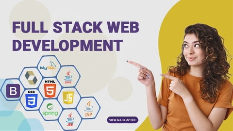

<html></html>
<head>
<title>COURSES</title>
<body background="2.jpg">
&nbsp;&nbsp;
<font size='6' color="pink"> TAP ACADEMY </font>

&nbsp;&nbsp;&nbsp;&nbsp;&nbsp;&nbsp;&nbsp;&nbsp;&nbsp;&nbsp;&nbsp;&nbsp;&nbsp;&nbsp;&nbsp;&nbsp;&nbsp;&nbsp;&nbsp;&nbsp;&nbsp;&nbsp;&nbsp;&nbsp;&nbsp;&nbsp;&nbsp;&nbsp;&nbsp;&nbsp;&nbsp;&nbsp;&nbsp;&nbsp;&nbsp;&nbsp;&nbsp;&nbsp;&nbsp;&nbsp;&nbsp;&nbsp;&nbsp;&nbsp;&nbsp;&nbsp;&nbsp;&nbsp;&nbsp;&nbsp;&nbsp;&nbsp;&nbsp;&nbsp;&nbsp;&nbsp;&nbsp;&nbsp;&nbsp;&nbsp;&nbsp;&nbsp;&nbsp;&nbsp;&nbsp;&nbsp;&nbsp;&nbsp;&nbsp;&nbsp;
<a href="index.html"><font size='4' color="black">HOME</font></a>
&nbsp;&nbsp;&nbsp;&nbsp;&nbsp;&nbsp;
<a href="about.html"><font size='4' color="black">ABOUT</font></a>
&nbsp;&nbsp;&nbsp;&nbsp;&nbsp;&nbsp;
<select> 
	<option value="">COURSE</option>
	<option>FULL STACK WEB DEVELOPMENT(JAVA)</option>
	<option>DATA STRUCTURES AND ALGORITHMS</option>
	</select>
&nbsp;&nbsp;&nbsp;&nbsp;&nbsp;&nbsp;
<a href="Contact.html"

><font size='4' color="black">CONTACT US</font></a>
&nbsp;&nbsp;&nbsp;&nbsp;&nbsp;&nbsp;
<a href="Register.html"><font size='4' color="black">REGISTER FORM</font></a>
<br><br><br><br><br><br>
<h1 align="center"><font color="pink" size='8'>FULL STACK WEB DEVELOPMENT COURSE</font></h1>
		 <body align="center"><font size='5'>Front-end Development
It is the visible part of website or web application which is responsible for user experience. The user directly interacts with the front end portion of the web application or website.

Front-end Technologies
The front end portion is built by using some languages which are discussed below:

HTML: HTML stands for Hyper Text Markup Language. It is used to design the front end portion of web pages using markup language. HTML is the combination of Hypertext and Markup language. Hypertext defines the link between the web pages. The markup language is used to define the text documentation within tag which defines the structure of web pages.
CSS: Cascading Style Sheets, fondly referred to as CSS, is a simply designed language intended to simplify the process of making web pages presentable. CSS allows you to apply styles to web pages. More importantly, CSS enables you to do this independent of the HTML that makes up each web page.
JavaScript: JavaScript is a famous scripting language used to create the magic on the sites to make the site interactive for the user. It is used to enhancing the functionality of a website to running cool games and web-based software.
Front End Libraries and Frameworks
AngularJS: AngularJs is a JavaScript open source front-end framework that is mainly used to develop single page web applications(SPAs). It is a continuously growing and expanding framework which provides better ways for developing web applications. It changes the static HTML to dynamic HTML. It is an open source project which can be freely used and changed by anyone. It extends HTML attributes with Directives, and data is bound with HTML.
React.js: React is a declarative, efficient, and flexible JavaScript library for building user interfaces. ReactJS is an open-source, component-based front end library responsible only for the view layer of the application. It is maintained by Facebook.
Bootstrap: Bootstrap is a free and open-source tool collection for creating responsive websites and web applications. It is the most popular HTML, CSS, and JavaScript framework for developing responsive, mobile-first web sites.
</body>
		 <br></br>
		 </img>
		 <br>
		 <h2 align="center"><a href="#"><font color="orange">START LEARNING</a></h2>
</head>
</html>